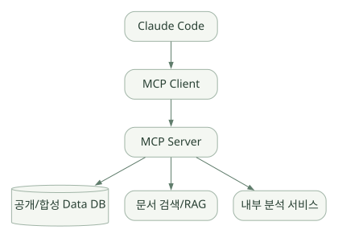

핵심 원리 / 단원 04
작업 지식과 데이터 접근 연결하기
점진적 로딩, 호출 조건, 외부 도구의 책임 경계
먼저 연결해 보기
Skill은 절차·참고자료·예시를 필요할 때 제공하는 재사용 지식입니다. 실제 파일 읽기나 DB 조회는 Tool이 수행하고, MCP는 외부 서버의 기능을 발견하고 호출하는 연결 규약입니다.
Skill의 자동·수동 호출 조건과 별도 Context 실행을 이해한 뒤 MCP의 도구 스키마·검색·실행 경계를 살펴보세요. 데이터를 어디까지 조회하고 어떤 결과를 모델에 전달할지는 서버와 DB의 인가·크기 제한·송신 정책으로 통제해야 합니다.
읽는 관점절차를 읽는 것, 실행 능력을 연결하는 것, 실제 데이터 권한을 부여하는 것을 각각 구분하세요.
10. Skills — 재사용 가능한 작업 지식#
10.1 Skills의 개념#
Skill은 특정 작업을 잘 수행하기 위한 절차·맥락·예제·참고 자료를 묶은 재사용 단위다. 일반적으로 SKILL.md와 부속 파일로 구성되며, 사용자가 /skill-name 형태로 요청하거나 적합할 때 모델이 사용하도록 할 수 있다. [R05]
Skill 자체가 프로그램 실행 엔진이나 별도의 LLM인 것은 아니다. 모델이 언제 어떤 절차·도구를 사용할지 판단하도록 도와준다.
10.2 디렉터리 예시#
.claude/skills/wafer-eda/
├── SKILL.md
├── references/
│ ├── schema.md
│ └── metric-definitions.md
├── scripts/
│ ├── validate_schema.py
│ └── compute_metrics.py
└── examples/
└── expected-output.jsonSKILL.md의 간단한 예#
---
name: wafer-eda
description: 공개 또는 합성 웨이퍼 데이터의 품질을 점검하고 EDA 결과를 정리한다.
---
# Wafer EDA
## When to use
- 데이터셋 품질 검토, 수율/결측/분포 분석 요청
## Procedure
1. 먼저 references/schema.md를 확인한다.
2. 입력의 LOT, wafer ID, 시간대, 단위를 검사한다.
3. scripts/validate_schema.py를 실행한다.
4. 스키마 통과 시에만 분석한다.
5. 결과에 입력 파일, 버전, 필터, 지표 산식, 미확인 가설을 분리한다.
## Constraints
- 민감 데이터 외부 전송 금지(별도 실행 정책으로도 강제).
- 실행하지 않은 테스트는 성공했다고 쓰지 않는다.10.3 점진적 로딩(Progressive disclosure)#
Skills의 이름·설명 메타데이터를 먼저 제공하고, 해당 Skill이 필요할 때 자세한 본문을 읽는 접근이 중요하다. 이렇게 하면 모든 작업 지식을 매 호출에 넣어 Context를 낭비하는 문제를 줄일 수 있다. description은 모델이 Skill 선택에 활용할 수 있으므로 어떤 상황에서 쓰는지를 구체적으로 적는다. [R05]
10.4 사용자 호출과 자동 호출 제어#
공식 Skills 문서 기준 다음 개념이 있다.
| 설정 | 설명 | 사용 사례 |
|---|---|---|
| 기본 설정 | 사용자와 모델 모두 호출 가능 | 공통 분석 절차 |
disable-model-invocation: true |
모델의 자발적인 호출 제한 | 배포·외부 전송·중요 변경처럼 사용자가 시작해야 할 작업 |
user-invocable: false |
사용자 직접 호출 대신 모델 전용 참고로 사용 | 기술 용어집·레거시 시스템 지식 |
context: fork |
별도의 Subagent Context로 실행하는 패턴 | 긴 조사·주관 대화 오염 감소 |
allowed-tools |
Skill 범위의 도구 사용 편의성 구성 | 읽기 중심 작업의 도구 한정 |
allowed-tools 같은 Skill 필드는 독립된 최종 보안 경계라고 간주해서는 안 된다. 실제 허용 여부는 전체 권한과 환경 정책도 확인해야 한다. [R05][R10]
10.5 Skill vs CLAUDE.md vs Tool vs MCP vs Subagent#
| 항목 | 주된 역할 | 예시 |
|---|---|---|
CLAUDE.md |
프로젝트의 지속적인 지시 | “모든 수치에 단위를 표시” |
| Skill | 반복 가능한 절차·전문 지식 | “수율 EDA 순서와 검증 체크” |
| Tool | 실제 작업 수행 | python validate.py |
| MCP | 외부 Tool을 Agent와 연결 | 사내 읽기 전용 DB 검색 도구 |
| Subagent | 별도 Context로 역할 위임 | 설비 로그 조사 전문 작업자 |
| Hook | 이벤트 시 결정적 검사·자동 작업 | 변경 전 검사, Tool 실행 차단 |
중요: Skill 설명에 “특정 데이터 조회”가 있다고 해도 실제 데이터 읽기는 Tool이나 MCP 같은 실행 수단이 필요하다.
11. MCP — 외부 데이터·도구 연동#
11.1 MCP는 무엇을 제공하는가?#
MCP(Model Context Protocol)는 Agent가 외부 서비스의 도구·데이터·컨텍스트 기능을 일정한 인터페이스로 발견하고 호출하게 하는 연결 규격이다. Claude Code는 MCP 클라이언트로 외부 MCP 서버를 이용할 수 있다. [R08]
넓은 도식은 가로로 이동하며 읽을 수 있습니다. 도식 크게 보기 ↗

원문에 수록된 학습용 도식입니다. 노드·화살표·분기 라벨을 보존해 다시 배치했습니다. 세부 조건과 예시·구현의 구분은 앞뒤 본문을 함께 읽으세요.
도식 원문 보기 (Mermaid)
flowchart LR
A[Claude Code] --> B[MCP Client]
B --> C[MCP Server]
C --> D[(공개/합성 Data DB)]
C --> E[문서 검색/RAG]
C --> F[내부 분석 서비스]MCP 자체가 DB도, RAG도, Agent도 아니다. 검색 서비스가 Resource/Tool 형태로 연결되어 있으면 해당 기능을 호출할 수 있는 것이다.
11.2 Claude Code와 MCP Server의 책임 분리#
| 책임 | Claude Code | MCP Server |
|---|---|---|
| 모델의 도구 선택 | 수행 | 수행하지 않음(일반적 구조) |
| MCP 프로토콜로 도구 연결 | Client | Server |
| 함수 입력 스키마 정의 | 사용·노출 | 정의·검증 |
| DB 권한/SQL 허용 | 호출 수준 제한 가능 | 서버와 DB 권한에서 강제 |
| 결과 반환 | Agent Context에 반영 | 데이터 조회·가공·오류 반환 |
| 감사 추적 | 세션·도구 호출 기록 | API/DB 접근·사용자/작업 ID 감사 |
11.3 연결 예시#
공식 문서의 대표 방식은 로컬 stdio 프로세스 또는 원격 HTTP 서버를 연결하는 것이다. 구체적인 명령은 버전과 MCP 서버에 따라 다르다. [R08]
# 예: 원격 HTTP MCP 서버 (실제 서버가 구성되어 있어야 함)
claude mcp add --transport http lab-search https://mcp.example.org/mcp
# 예: 로컬 stdio MCP 서버 (명령은 예시, 미구현 상태에서는 실행 불가)
claude mcp add wafer-tools -- python -m demo_mcp_server
# 등록/상태 확인
claude mcp list
claude mcp get lab-search
# 대화형 세션에서는 /mcp예제의 mcp.example.org는 실제 접근할 사내 엔드포인트를 뜻하지 않는 자리표시자다. 토큰을 CLI 기록이나 소스 저장소에 직접 남기지 않는다.
11.4 Tool 검색과 Context 비용#
MCP 서버에 수백 개의 도구가 있으면 도구 설명을 전부 모델에 제공하는 것만으로 Context를 압박한다. 공식 자료에는 도구 검색 및 지연 로딩 관련 기능도 기술되어 있다. 도구 이름과 스키마를 짧고 구체적으로 정의하고, 필요한 API만 노출하도록 설계하는 것이 중요하다. [R08]
11.5 반도체 Agent에서 추천할 MCP 도구 인터페이스#
[설계 제안] 임의 SQL 실행보다 도메인 제약이 걸린 함수를 우선 제공한다.
{
"tool": "query_wafer_metrics",
"input": {
"product_family": "synthetic_product_A",
"date_from": "2026-01-01",
"date_to": "2026-01-31",
"metric": "yield_rate",
"max_rows": 1000
}
}여기서 metric은 서버가 미리 정의한 계산 산식만 허용하고, max_rows 상한·날짜 범위·권한·쿼리 타임아웃을 서버가 강제한다. 모델이 인자에 max_rows: 100000000을 보냈다고 그대로 수용하지 않는다.
11.6 MCP 보안 지점#
- 서버 주소·TLS·인증·토큰 로테이션.
- 사용자·에이전트 식별자·권한 범위.
- 허용된 도구만 제공; 변경 도구와 조회 도구 분리.
- 파라미터 스키마 검사, 최대 조회량, 쿼리 속도 제한.
- 출력의 민감 필드 제거·크기 제한.
- 결과 데이터 안의 프롬프트 인젝션을 신뢰하지 않음.
- 외부 MCP 서버와 내부망 MCP 서버 사이의 데이터 이동 정책.
- 오류·재시도·중복 실행·장시간 조회에 대한 제한.
반도체 현장: 공정 레시피나 고객 식별정보를 조회하는 도구는 “전용 MCP 서버로 감쌌다”는 이유만으로 안전해지지 않는다. 실제 데이터베이스·네트워크·접근 정책이 제일 중요하다.